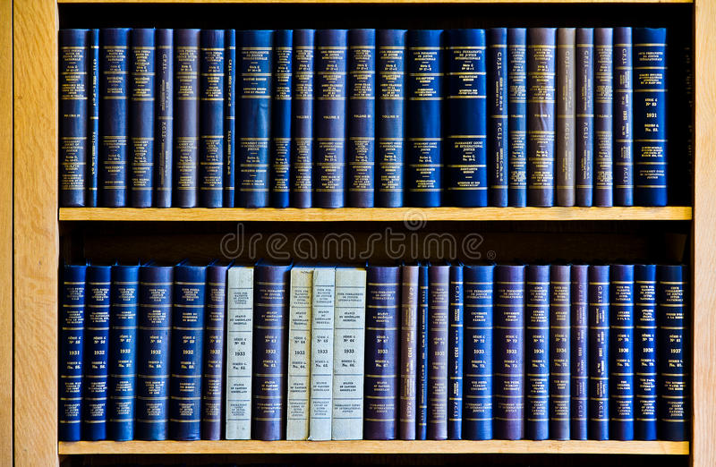

Una propuesta innovadora
Dada la nueva iniciativa de remodelación de la antigua biblioteca como "area de ocio", el centro ha decido deshacerse de todos aquellos libros que la habitaban.
Nuestra propuesta es deshacernos de ellos de la manera más sostenible posible, con la ayuda de nuestra empresa asociada Reciclado Sostenible así como no perder aquel contenido impreso en sus páginas, el conocimiento de muchos años de ciencia y cultura.
Para ello hemos planteado varias ideas las cuales servirían tanto como para liberar la nueva zona de dichos libros y aprovecharlos además de no perder su conocimiento.
"La lectura es a la mente lo que el ejercicio al cuerpo"
Joseph Addison
Nuestros objetivos son:
- Vaciar el aula de libros.
- Almacenarlos temporalmente en un lugar seguro.
- Digitalizar todos aquellos libros los cuales no se encuentren dentro del sistema. El centro se encargará de adquirir un nuevo scanner como éste.
- Entregar todos aquellos libros ya digitalizados a una empresa de reciclaje e imprimir nuevos libros o material escolar de manera sostenible.
Un nuevo propósito
Como ya se ha explicado, los viejos libros se reciclarán y se utilizarán para imprimir nuevos, de manera sostenible, para aprovechar todo aquel conocimiento arcaico y convertirlo en algo más contemporáneo, de manera que todos aquello que necesitaran nuevos libros, los podrían encargar de manera fácil y asequible. Podrás encontrar más información sobre cómo reutilizar tus propios libros aquí.
 Index
Index